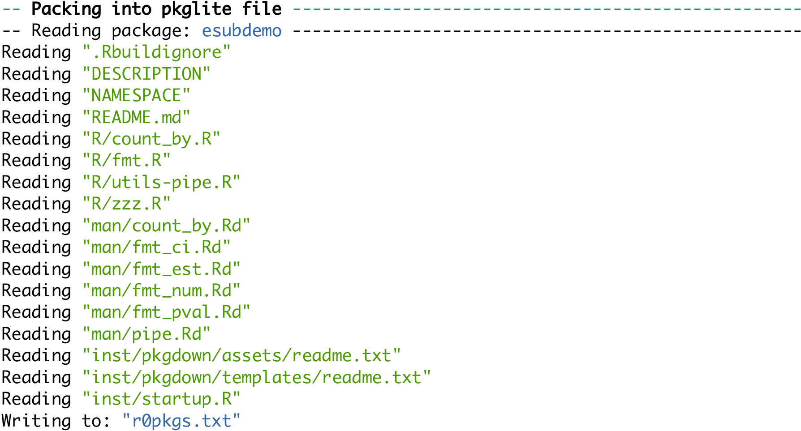

install.packages("pkglite")14 Submission package
In this chapter, we will first give a high-level overview of what assets in the eCTD submission package we should focus on when submitting R code. Then, we will discuss how to prepare the proprietary R packages (if any), and make them be part of the submission package. In the end, we will provide reusable templates for updating Analysis Data Reviewer’s Guide (ADRG) and Analysis Results Metadata (ARM) so that the reviewers receive proper instructions to reproduce the analysis results.
14.1 Prerequisites
This chapter uses pkglite (Zhao et al. 2023) to convert R source packages into text files and back.
The demo project (R package) we will prepare for submission is called esubdemo, which is available on GitHub. You can download or clone it:
git clone https://github.com/elong0527/esubdemo.gitThe demo submission package (not to be confused with the R package above) is ectddemo, which is also available on GitHub. You can download or clone it:
git clone https://github.com/elong0527/ectddemo.gitWe assume the paths to the two folders are esubdemo/ and ectddemo/ below.
14.2 The whole game
In eCTD deliverable, the analysis datasets and source code are saved under the eCTD module 5 (clinical study reports) folder
ectddemo/m5/datasets/<study>/analysis/adam/The files in two directories within the adam/ folder are critical for documenting analysis using R: datasets/ and programs/.
ectddemo/m5/datasets/ectddemo/analysis/adam/
├── datasets
│ ├── adae.xpt
│ ├── ...
│ ├── adrg.pdf
│ ├── analysis-results-metadata.pdf
│ ├── define.xml
│ └── define2-0-0.xsl
└── programs
├── r0pkgs.txt
├── tlf-01-disposition.txt
├── tlf-02-population.txt
├── tlf-03-baseline.txt
├── tlf-04-efficacy.txt
├── tlf-05-ae-summary.txt
└── tlf-06-ae-spec.txtThe special considerations for each component are listed below.
14.2.1 datasets
Folder path: ectddemo/m5/datasets/ectddemo/analysis/adam/datasets/.
- ADaM data in
.xptformat: created by SAS or R. define.xml: created by Pinnacle 21.- ADRG (Analysis Data Reviewer’s Guide)
- “Macro Programs” section: provide R and R package versions with a snapshot date.
- Appendix: provide step-by-step instructions for reviewers to reproduce the running environment and rerun analyses.
- ARM (Analysis Results Metadata): provide the links between TLFs and analysis programs in tables.
14.2.2 programs
Folder path: ectddemo/m5/datasets/ectddemo/analysis/adam/programs/.
r0pkgs.txt: contains all internally developed proprietary R packages.- Other
.txtfiles: each contains R code for a specific analysis.
14.2.3 Notes
To verify if the submission package works, rerun all analyses following the instructions defined in ADRG.
A few things need to be paid attention to in order to pass compliance checks:
- The file names under
programs/should be in lower case letters (with no underscores or other special characters). - The
.txtfiles should only contain ASCII characters. This can be verified bypkglite::verify_ascii() - All
.docxfiles should be converted to PDF files for formal submission.
Now you have a general idea about the relevant components of the submission package. We will prepare the proprietary R packages in the following sections.
14.3 Practical considerations for R package submissions
Before we start, there are a few aspects to figure out in order to accurately identify the R packages for submission.
14.3.1 Source location
There are a few common places to host R (source) packages:
- CRAN
- Public Git repository
- Private Git repository (accessible externally)
- Private Git repository (inaccessible externally)
For R packages hosted on CRAN or a public Git repository, you probably do not need to submit them as part of the submission package, as the reviewers can install them directly by following the instructions in ADRG.
For R packages hosted in private repositories, to avoid any complications in infrastructure, authentication, and communication, it is often recommended to submit them as part of the submission package.
14.3.2 Dependency locations
R package dependency is another major factor to consider before preparing your proprietary R package for submission.
For dependencies available from CRAN or public Git repositories, you can declare them directly using the regular Imports and Suggests syntax or the remotes dependency syntax in the DESCRIPTION file.
For dependencies hosted in private Git repositories, you should pack them with the primary R package(s) you want to submit, as pkglite supports packing multiple R packages into a single text file; then restore and install them in the order they are packed.
14.3.3 R version
Always use a consistent version of R for developing the TLFs and for submission. For example, you could enforce a rule to only use R x.y.z where z = 1, such as R 4.0.1 or R 4.1.1. This can be automatically checked using a startup script when the R project is opened.
14.3.4 Package repo version
Always use the same snapshot package repo for developing the TLFs and for submission. Again, this can be checked in the project startup script, as discussed in Section 11.2.
14.3.5 System environments
Introducing any extra external dependencies will likely increase the cost of qualification, validation, testing, and maintenance, especially under Windows. Therefore, it is recommended to keep the dependency chain simple, especially when involving compiled code (e.g., C, C++, Fortran).
14.4 Prepare R packages for submission
To prepare R packages for submission, one needs to pack the packages into text files, and then verify if the files only contain ASCII characters. With packed packages, one can unpack and install them from the text files, too.
14.4.1 Pack
Let’s pack the esubdemo package into a text file. Assume the source package path is esubdemo/. You should be able to pack the package with a single pipe:
library("pkglite")
"esubdemo/" %>%
collate(file_ectd(), file_auto("inst")) %>%
pack(output = "r0pkgs.txt")
Let’s open the generated text file:
file.edit("r0pkgs.txt")
What happened in the pipe? The function pkglite::collate() evaluates a specified scope of folders and files defined by a list of file specifications, and generates a file collection object. This file collection contains the metadata required to properly convert the files into text which is then used by pkglite::pack(). With this flow, you can define the scope of the R source package to be packed for submission in a flexible yet principled way.
To pack multiple R packages, simply feed multiple file collections as inputs:
pack(
"/path/to/pkg1/" %>% collate(file_ectd()),
"/path/to/pkg2/" %>% collate(file_ectd()),
output = "r0pkgs.txt"
)The R packages are always packed in the specified order and are always unpacked and installed in the same order. Therefore, make sure to pack the low-level dependencies first.
For more details on how to customize file specifications and operate on file collections, check out the vignette generate file specifications and curate file collections.
14.4.2 Verify
You should always verify if the text file only contains ASCII characters:
verify_ascii("r0pkgs.txt")This should give TRUE if the file only contains ASCII characters, or FALSE with the affected lines otherwise.
14.4.3 Unpack
One can unpack and install the package from the text file, too. For example:
unpack("r0pkgs.txt", output = "/tmp/", install = TRUE)If the test is successful, this command can be used in the ADRG instructions for restoring and installing the packed R package(s).
You can then proceed to move the file r0pkgs.txt to the folder ectddemo/m5/datasets/ectddemo/analysis/adam/programs/, or specify the output text file path above directly.
14.5 Prepare analysis programs for submission
Besides the R packages, we need to convert the R Markdown (.Rmd) files into .txt files and saved them in the programs/ folder. You can do this with knitr::purl():
input_path <- "esubdemo/vignettes/"
output_path <- "ectddemo/m5/datasets/ectddemo/analysis/adam/programs/"
convert_rmd <- function(filename, input_dir, output_dir) {
knitr::purl(
file.path(input_dir, paste0(filename, ".Rmd")),
output = file.path(output_dir, paste0(filename, ".txt"))
)
}
"tlf-01-disposition" %>% convert_rmd(input_path, output_path)
"tlf-02-population" %>% convert_rmd(input_path, output_path)
"tlf-03-baseline" %>% convert_rmd(input_path, output_path)
"tlf-04-efficacy" %>% convert_rmd(input_path, output_path)
"tlf-05-ae-summary" %>% convert_rmd(input_path, output_path)
"tlf-06-ae-spec" %>% convert_rmd(input_path, output_path)Optionally, you can add a header to the individual .txt files to explain the context and help the reviewers rerun the code. For example:
# Note to Reviewer
# To rerun the code below, please refer to the ADRG appendix.
# After the required packages are installed,
# the path variable needs to be defined by using the example code below.
#
# path = list(adam = "/path/to/esub/analysis/adam/datasets") # Modify to use actual location
# path$outtable = path$outgraph = "." # Outputs saved to the current folderTo automate this process:
header <- readLines(textConnection("# Note to Reviewer
# To rerun the code below, please refer to the ADRG appendix.
# After the required packages are installed,
# the path variable needs to be defined by using the example code below.
#
# path = list(adam = \"/path/to/esub/analysis/adam/datasets\") # Modify to use actual location
# path$outtable = path$outgraph = \".\" # Outputs saved to the current folder"))
append_header <- function(filename, output_dir, header) {
file <- file.path(output_dir, paste0(filename, ".txt"))
x <- readLines(file)
y <- c(header, "", x)
writeLines(y, con = file)
invisible(file)
}
"tlf-01-disposition" %>% append_header(output_path, header)
"tlf-02-population" %>% append_header(output_path, header)
"tlf-03-baseline" %>% append_header(output_path, header)
"tlf-04-efficacy" %>% append_header(output_path, header)
"tlf-05-ae-summary" %>% append_header(output_path, header)
"tlf-06-ae-spec" %>% append_header(output_path, header)14.6 Update ADRG
After we converted the R packages and R Markdown files into the appropriate formats and verified that they can be restored and executed correctly, we need update the ADRG to provide guidelines on how to use them.
Specifically, we need to update two sections in ADRG.
The first section is “Macro Programs”, where R and R package versions with a snapshot date are provided. For example:
7.x Macro Programs
Submitted R programs have [specific patterns] in filenames.
All internally developed R functions are saved in the r0pkgs.txt file.
The recommended steps to unpack these R functions for analysis output
programs are described in the Appendix.
The tables below contain the software version and instructions
for executing the R analysis output programs:| Program Name | Output Table | Title |
|---|---|---|
| tlf-01-disposition.txt | Table x.y.z | Disposition of Patients |
| tlf-02-population.txt | Table x.y.z | Participants Accounting in Analysis Population (All Participants Randomized) |
| tlf-03-baseline.txt | Table x.y.z | Participant Baseline Characteristics (All Participants Randomized) |
| tlf-04-efficacy.txt | Table x.y.z | ANCOVA of Change from Baseline Glucose (mmol/L) at Week 24 LOCF Efficacy Analysis Population |
| tlf-05-ae-summary.txt | Table x.y.z | Analysis of Adverse Event Summary (Safety Analysis Population) |
| tlf-06-ae-spec.txt | Table x.y.z | Analysis of Participants With Specific Adverse Events (Safety Analysis Population) |
| Open-Source R Analysis Package | Package Version | Analysis Package Description |
|---|---|---|
| pkglite | 0.2.0 | Prepare submission package |
| haven | 2.4.3 | Read SAS datasets |
| dplyr | 1.0.7 | Manipulate datasets |
| tidyr | 1.1.3 | Manipulate datasets |
| emmeans | 1.6.2-1 | Least-squares means estimation |
| r2rtf | 0.3.0 | Create RTF tables |
| R package versions based on CRAN on 2021-08-06 |
| Proprietary R Analysis Package | Package Version | Analysis Package Description |
|---|---|---|
| esubdemo | 0.1.0 | A demo package for analysis and reporting of clinical trials |
The second section (Appendix) should include step-by-step instructions to reproduce the running environment and rerun analyses. For example:
Appendix: Instructions to Execute Analysis Program in R
1. Install R
Download and install R 4.1.1 for Windows from
https://cran.r-project.org/bin/windows/base/old/4.1.1/R-4.1.1-win.exe
2. Define working directory
Create a temporary working directory, for example, "C:\tempwork".
Copy all submitted R programs into the temporary folder.
All steps below should be executed in this working directory
represented as "." in the example R code below.
3. Specify R package repository
The R packages are based on CRAN at 2021-08-06. To install the exact
R package versions used in this project, run the code below to set
the snapshot repository.
options(repos = "https://mran.microsoft.com/snapshot/2021-08-06/")
4. Install open-source R packages
In the same R session, install the required packages by running the code below.
install.packages(c("pkglite", "publicpkg1", "publicpkg2"))
5. Install proprietary R packages
All internal R packages are packed in the file r0pkgs.txt. In the same R session,
restore the package structures and install them by running the code below.
Adjust the output path as needed to use a writable local directory.
pkglite::unpack("r0pkgs.txt", output = ".", install = TRUE)
6. Update path to dataset and TLFs
INPUT path: to rerun the analysis programs, define the path variable
- Path for ADaM data: path$adam
OUTPUT path: to save the analysis results, define the path variable
- Path for output TLFs: path$output
All these paths need to be defined before executing the analysis program. For example:
path = list(adam = "/path/to/esub/analysis/adam/datasets/") # Modify to use actual location
path$outtable = path$outgraph = "." # Outputs saved to the current folder
7. Execute analysis program
To reproduce the analysis results, rerun the following programs:
- tlf-01-disposition.txt
- tlf-02-population.txt
- tlf-03-baseline.txt
- tlf-04-efficacy.txt
- tlf-05-ae-summary.txt
- tlf-06-ae-spec.txtAn example ADRG following this template can be found in ectddemo.
14.7 Update ARM
The ARM (Analysis Results Metadata) should provide specific information related to R in two sections:
- Section 2: indicate the Programming Language;
- Section 3: document the details of the R programs listed in section 3.
For example, in ARM section 2, “Analysis Results Metadata Summary”:
if (knitr::is_latex_output()) {
df4 %>% kbl(format = "latex")
}
if (knitr::is_html_output()) {
df4 %>%
kbl(format = "html") %>%
kable_classic(full_width = FALSE, html_font = "'Times New Roman', Times, serif", font_size = 18) %>%
column_spec(1, extra_css = "border: 1px solid #000; text-align: center;") %>%
column_spec(2, extra_css = "border: 1px solid #000; text-align: center;") %>%
column_spec(3, extra_css = "border: 1px solid #000; text-align: center;") %>%
column_spec(4, extra_css = "border: 1px solid #000; text-align: center;") %>%
column_spec(5, extra_css = "border: 1px solid #000; text-align: center;") %>%
row_spec(0, background = "#DFDFDF", bold = TRUE, extra_css = "border: 1px solid #000; text-align: center;")
}| Table Reference | Table Title | Programming Language | Program Name (programs) | Input File Name / Analysis (datasets) |
|---|---|---|---|---|
| [Ref. x.y.z: P001ZZZ9999: Table 1-1] | Disposition of Patients | R | tlf-01-disposition.txt | adsl.xpt |
| ... | ... | ... | ... | ... |
In ARM section 3, “Analysis Results Metadata Details”:
| Table Reference: [Ref. x.y.z: P001ZZZ9999: Table 1-1] | ... |
| Analysis Result | ... |
| Analysis Parameters (s) | ... |
| Analysis Reason | ... |
| Analysis Purpose | ... |
| ... | ... |
| Programming Statements | (R version 4.1.1), [P001ZZZ9999: programs-tlf-01-disposition] |